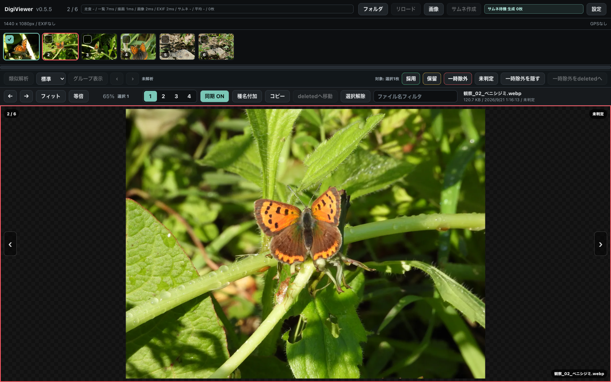
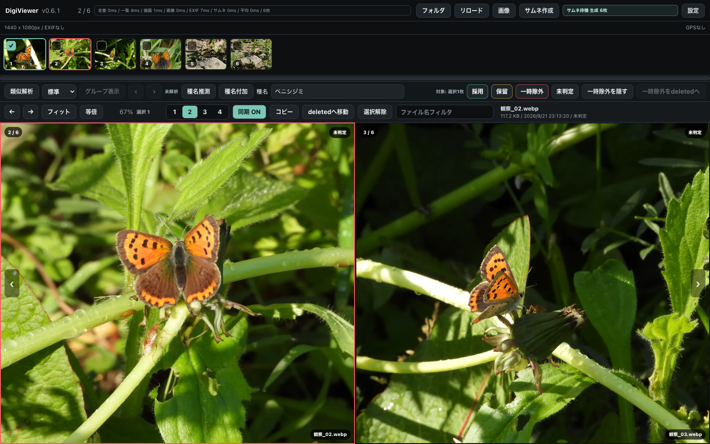
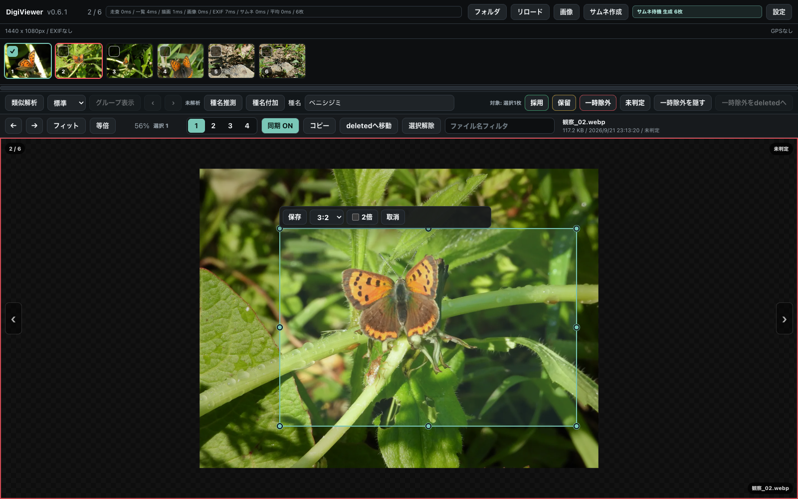
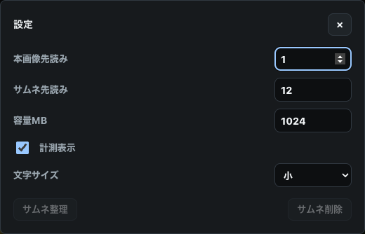

DigiViewer / USER MANUAL
DigiViewer 操作マニュアル
連写などで撮った大量の写真から、
残したい一枚を選ぶために。
DigiViewerは、連写などを活用して大量の写真を撮影し、その中から必要な写真を選び出す人のために作った画像ビューアーです。
写真を素早く切り替え、同じ倍率・位置で並べて比較することで、微妙なピントや構図の違いを確認できます。昆虫や野生生物の観察写真をはじめ、大量の写真を確認・選別する作業を支えます。
「デジタル観察のススメ」を支える道具のひとつとして、撮影した写真をじっくり見返し、種名を付け、観察記録や地域の生き物情報の共有へつなげることを目指しています。
まず写真を開いてみる →目次
01 / START
インストールと起動
v0.6.1のリリースページの「Assets」から、お使いのOSに合う配布ファイルを取得します。ソースコードのダウンロードや開発環境の準備は不要です。
Mac（Apple Silicon）
DigiViewer_0.6.1_mac_aarch64.zipをダウンロードして展開します。DigiViewer.appを「アプリケーション」フォルダに入れます。- アプリケーションフォルダからDigiViewerを開きます。必要に応じてDockに追加します。
このMac用パッケージはApple Silicon向けです。更新するときはDigiViewerを終了してからアプリを置き換え、起動後に画面左上のバージョンを確認してください。
Mac版はアプリ全体に仮署名していますが、AppleのDeveloper ID署名・公証はありません。初回起動で開発元を確認できないという警告が出た場合は、公式リリースから取得したことを確認し、「システム設定」→「プライバシーとセキュリティ」→「このまま開く」で、このアプリの起動を許可してください。詳しくはAppleの案内を参照してください。
2026年9月22日午前の0.6.0 Mac版ZIPは署名不備があり、同日修正版に差し替えました。「壊れているため開けません」と表示された場合は、古いDigiViewer.appを取り除き、ZIPを再ダウンロードして展開し直してください。写真と追加モデルを削除する必要はありません。
Windows（x64）
DigiViewer_0.6.1_windows_x64_setup.exeをダウンロードします。- インストーラーを起動し、案内に沿ってインストールします。
- スタートメニューからDigiViewerを開きます。
同じリリースにMSIと単体EXEもあります。このマニュアルではセットアップ用EXEでのインストールを基本とします。起動時にOSが表示した警告やエラーで進めない場合は、表示内容とOS・アプリのバージョンを確認してください。
02 / QUICK START
まず使ってみる
連写した写真から、ピントの合ったものを選ぶ流れです。最初は次の操作だけで始められます。
- 「フォルダ」で写真のあるフォルダを開く。
上部にサムネイルが並び、写真を表示できます。 - 新しくフォルダを開いたら「サムネ作成」を実行する。
一覧を快適に見られるよう、フォルダ全体のサムネイルを準備します。写真の枚数やサイズ、保存先によっては少し時間がかかります。右横の状態欄で進捗を確認し、「完了」と表示されるまで待ちます。すでに使えるキャッシュがある写真は再利用します。 - 左右の矢印キーで前後の写真を見る。
← で前へ、→ で次へ移動します。 - 「等倍」でピントを確認する。
ホイールで拡大縮小、写真をドラッグして注目したい位置へ移動します。前後の写真に切り替えても表示倍率と位置を保ちます。 - 残したい写真で M を押してチェックする。
もう一度押すとチェックが外れます。サムネイルのチェックボックスでも操作できます。 - 「コピー」を押し、保存先フォルダに貼り付ける。
MacはFinderで ⌘＋V、Windowsはエクスプローラーで Ctrl＋V。チェックした画像ファイルをまとめてコピーできます。
表示中の写真とチェック済みの写真は別です。「コピー」や「種名付加」は、チェックした写真が対象になります。
03 / WORKSPACE
画面の見方
{kind=link}

| 領域 | 主な内容 |
|---|---|
| 最上段 | アプリ名・バージョン・件数、処理時間、フォルダ、リロード、画像、サムネ作成、作成状況、設定。 |
| 画像情報 | 縦横のピクセル数、RAWの有無、撮影日時、カメラ・レンズ、撮影設定など。記録されている項目を表示します。 |
| サムネイル | 写真の一覧とチェックボックス。下の横スクロールバーで離れた位置へ移動できます。 |
| 類似写真・評価バー | 類似解析、グループ移動、採用・保留・一時除外など。右側の「対象」を確認して操作します。 |
| 操作バー | 画像送り、倍率、比較枚数、同期、種名付加、コピー、deletedへ移動、フィルタ、ファイル情報。 |
| 写真表示エリア | 1〜4枚の写真。左右端の矢印でも画像を送れます。各写真の右下にファイル名を表示します。 |
赤い枠と緑の枠
赤い枠：操作対象 現在操作している写真・比較枠を示します。緑の枠・チェック：選択済み コピーや種名付加などの対象です。チェック済みの写真を表示している場合は、枠だけでなくチェックマークも確認してください。
撮影情報とGPS
EXIFに撮影日時や機材情報があれば、画像情報の行に表示します。「EXIFなし」は読み取れる情報がない状態です。GPSがあれば「地図」から撮影場所を確認できます。地図の読み込みにはインターネット接続が必要で、座標をOpenStreetMapに渡します。
操作バーのファイル名の下にある日付はファイルの更新日時です。EXIFの撮影日時とは異なる場合があります。
04 / VIEW & COMPARE
写真を見る・並べて比較する
フォルダと画像の開き方
「フォルダ」は子フォルダ内も含めて画像を読み込みます。deleted と .digiviewer フォルダは一覧の対象外です。「画像」は個別のファイルを選んで開きます。評価の保存や類似解析、リロードを使うときは「フォルダ」から開いてください。
表示倍率と位置
「フィット」は写真全体を表示枠に収めます。「等倍」はアプリの表示座標上で画像の1ピクセルを1ピクセルとして表示する100%表示です。RetinaやWindowsの表示スケールにより、ディスプレイの物理ピクセルとの対応は変わります。
写真上でホイールを回すと拡大縮小、ドラッグすると表示位置を移動します。左右キーで写真を切り替えると、倍率と位置を引き継ぎます。写真を見失ったときは「フィット」で全体に戻れます。
2〜4枚で比較する
- 操作バーの「2」「3」「4」で比較枚数を選びます。2・3枚は横並び、4枚は田の字になります。
- 写真を入れたい比較枠をクリックします。赤い枠が操作対象です。
- サムネイルをクリックすると、その枠の写真が変わります。サムネイルを枠へドラッグして入れることもできます。
- 「同期 ON」で拡大縮小やドラッグをすると、全枠に同じ倍率と移動量が適用されます。
{kind=link}

同期OFFでは各枠を個別に拡大・移動できます。左右キーによる画像送りは、同期ONでも赤い枠の写真だけが対象です。「1」に戻すと、その時点で操作していた枠の写真が残ります。比較枚数を切り替える際は表示がフィットに調整されます。
05 / SELECT & ORGANIZE
チェックして、ファイルを整理する
チェックを付ける・外す
| 操作 | 結果 |
|---|---|
| チェックボックスをクリック | その写真のチェックを切り替えます。 |
| M | 操作対象の枠に表示されている写真のチェックを切り替えます。 |
| Mac：⌘＋サムネイルをクリック Windows：Ctrl＋サムネイルをクリック | 既存のチェックを残して、クリックした写真のチェックを切り替えます。 |
| Shift＋クリック | 最後にチェック操作した写真からクリック先までをまとめて変更します。クリック先が未チェックなら付け、チェック済みなら外します。 |
| 「選択解除」 | すべてのチェックを外します。採用・保留などの評価は残ります。 |
v0.6.1の範囲チェックは、元の画像一覧の順序に基づきます。フィルタやグループ表示で見えていない写真が含まれる場合があるため、範囲チェックは通常の一覧で行い、操作前に「選択」の枚数を確認してください。絞り込み後も、以前付けたチェックは残る場合があります。
種名をファイル名に付ける
- 対象の写真をチェックし、「種名付加」を押します。
- 種名を入力して「OK」を押します。
例：DSC01234.JPG → DSC01234_ベニシジミ.JPG。拡張子の前に種名を追加します。同じ名前のRAWがあれば、RAWも同じベース名へ変更します。通常はサムネイルキャッシュも引き継ぎます。
「種名付加」は種名以外の文字も追加できます。「卵」「幼虫」などの注釈や、「犬山市」などの撮影地をファイル名に残す用途にも使えます。例えば「ベニシジミ_幼虫_犬山市」と入力すると、DSC01234_ベニシジミ_幼虫_犬山市.JPG になります。
ファイルをコピーする
対象をチェックして「コピー」を押し、Finderまたはエクスプローラーで目的のフォルダへ貼り付けます。写真そのものをクリップボードに渡す操作です。同時記録されたRAWは自動ではコピーしません。RAWも必要な場合はファイル管理アプリからコピーしてください。
不要な写真をdeletedへ移動する
チェック後に「deletedへ移動」を押し、確認ダイアログで実行します。今開いているフォルダの配下に deleted を作って画像を移し、サムネイル一覧から外します。同じ名前のRAWがある場合は、RAWも一緒に移動します。
戻すときはFinder／エクスプローラーで deleted を開き、元のフォルダへファイルを戻してから「リロード」を押します。子フォルダから移した写真は、元の子フォルダへ戻してください。同名ファイルとの衝突で移動時に連番が付く場合があります。
ファイル名で絞り込む
ファイル名の左にある「ファイル名フィルタ」に文字を入力します。ファイル名の一部が一致する写真だけが表示されます。英字の大文字・小文字は区別しません。入力を空にすると絞り込みが解除されます。
別のソフトで追加した画像を読み込む
上段の「リロード」を押すと、同じフォルダに追加された画像を一覧に加え、追加分のサムネイルキャッシュを作成します。v0.6.1のリロードは新しいファイルの追加が対象です。同じ名前で上書き編集した画像や、外部で削除・改名したファイルを反映したい場合は、「フォルダ」から開き直してください。
06 / REVIEW
類似写真をまとめて、評価を付ける
チェックは一括操作の対象指定です。一方、採用・保留・一時除外は、写真をどう扱うかを記録する評価です。評価はフォルダ内に保存され、次に開いたときも復元されます。
似た写真をグループで見る
- 「フォルダ」で写真を開きます。
- 類似度を「厳しい」「標準」「ゆるい」から選び、「類似解析」を押します。迷ったら「標準」から始めます。
- 解析状況を確認します。似た写真が見つかるとグループ表示になり、最大4枚が並びます。
- 「グループ表示」右の矢印でグループを移動します。5枚以上あるグループでは、サムネイルから各枠へ写真を入れ替えて確認します。
対象は選んだフォルダ直下の写真です。子フォルダの写真は解析しません。グループ表示中はグループに属する写真だけが一覧に出ます。通常の一覧へ戻るには「グループ表示」をOFFにします。
類似解析は見た目の特徴から候補をまとめます。種の同定や、最もピントが合う写真の自動判定ではありません。基準を変更して再度「類似解析」を押すと、保存済みの解析情報を再利用してグループを作り直します。
評価を付ける・取り消す
| 評価 | 使い方の例 | キー |
|---|---|---|
| 採用 | 残したい、記録に使いたい写真。 | K |
| 保留 | あとで比較・確認したい写真。 | H |
| 一時除外 | ピンボケなど、選別の候補から外したい写真。 | X |
| 未判定 | 評価を解除して、判断前の状態へ戻す。 | U |
チェックがあればチェック済みの写真すべてに、なければ操作対象の表示写真に適用します。評価バーの「対象」を確認してください。同じ評価のボタンをもう一度押すと未判定へ戻ります。複数対象の場合は、全対象がその評価のときだけ解除されます。
評価変更時も表示倍率・位置を保ちます。「一時除外を隠す」で候補だけを表示でき、もう一度押すと非表示を解除できます。
一時除外だけではファイルは移動しません。「一時除外をdeletedへ」を押すと、読み込んだ一覧内の一時除外写真をまとめて移動します。チェックや表示中のグループ・フィルタに限定されないため、確認ダイアログの対象枚数を確認してください。
07 / CROP
必要な範囲を切り抜いて保存する
- 切り抜きたい写真を表示します。比較中は対象の枠を選びます。
- Shift を押しながら写真上をドラッグし、四角い範囲を選びます。
- 四隅や各辺の中央の操作点で大きさを調整します。範囲内をドラッグすると、大きさを保って移動できます。
- メニューで縦横比を「任意」「1:1」「3:2」「4:3」から選びます。変更時は左辺を基準に調整されます。
- 必要なら「2倍」にチェックし、「保存」を押します。「取消」または Esc で選択を取り消せます。
{kind=link}

保存するファイル
元画像と同じフォルダに高画質JPEG（品質設定97）で保存します。例：DSC01234.JPG → DSC01234_crop.jpg。同名があれば _crop_1.jpg のように連番を付けます。元画像を残したまま、新しい画像が元画像の右隣に並びます。フィルタや非表示条件に当てはまらない場合は、表示条件を解除して確認してください。
元がJPEGの場合、記録されているEXIF・XMP・ICCプロファイルを引き継ぎ、ファイル更新日時も元に合わせます。別形式からのクロップでは同じ撮影情報の引き継ぎを保証しません。同時記録されたRAWは編集せず、クロップしたRAWも作成しません。
「2倍」について
切り抜いた範囲の縦・横のピクセル数をそれぞれ2倍にします。例：1,000 × 800px → 2,000 × 1,600px。現在はLanczos補間による拡大です。AI超解像や、写っていない細部を復元する機能ではありません。
08 / SETTINGS
快適に使うための設定とキャッシュ
右上の「設定」から変更します。数値は入力後に別の項目をクリックするなどして確定してください。設定は自動で保存されます。
{kind=link}

| 設定 | 効果とv0.6.1の制限 |
|---|---|
| 本画像先読み | 表示中の写真の前後を先に読み込みます。0で先読みを止められます。入力欄は50まで指定できますが、現在の実効上限は前後各1枚です。 |
| サムネ先読み | 表示中の写真の前後にあるサムネイルを準備します。入力欄は1000までですが、候補範囲の実効上限は前後各24枚、1回の背景処理は最大12枚です。0にしても画面上に見えているサムネイルは読み込みます。 |
| 容量MB | アプリ共通のサムネイルキャッシュに対する容量管理の目安です。定期的に整理するため、一時的に超える場合があります。写真フォルダ内の共有キャッシュには、この上限は適用されません。 |
| 計測表示 | 最上段の処理時間表示を切り替えます。遅い処理を調べるときに使います。 |
| 文字サイズ | 小・中・大から選びます。基準の文字サイズは小14px・中17px・大20pxで、各部の文字もそれに応じて大きくなります。 |
新しくフォルダを開いたら「サムネ作成」
新しくフォルダを開いたら、上段の「サムネ作成」を実行してください。写真の枚数やサイズ、保存先によっては少し時間がかかりますが、先に準備しておくと一覧の移動や次回の閲覧が快適になります。右横の状態欄で進捗と完了を確認できます。
通常も、見えている範囲とその周辺のサムネイルを順次準備します。「サムネ作成」は読み込んだ画像全体が対象で、フィルタやチェックに限定されません。使えるキャッシュは再利用します。
右横の状態欄に処理済み枚数と「作成」「再利用」「失敗」の件数を表示し、処理が終わると「完了」と表示します。「サムネ待機」は背景の待機状態であり、フォルダ全体のキャッシュ作成完了を意味しません。
サムネ整理とサムネ削除
「サムネ整理」は元画像の名前に対応しなくなったキャッシュを削除します。「サムネ削除」は現在のフォルダと配下のサムネイルキャッシュを全削除します。写真そのものや採用・保留などの評価は削除しません。削除後は必要なサムネイルが再作成されます。
写真フォルダに保存したキャッシュは、同じフォルダをMacとWindowsで開くときにも利用できます。画像と一緒に .digiviewer フォルダも保持してください。
処理時間の読み方
「走査」はファイルを探す時間、「一覧」「描画」は表示準備、「画像」は本画像の読み込み、「EXIF」は撮影情報の読み込み、「サムネ」「平均」はサムネイルの処理時間です。単位はms（1,000ms＝1秒）です。各処理は重なることがあるため、合計が操作の待ち時間になるわけではありません。
OPTION / SPECIES
種名推測（無料の追加機能）
写真1枚から生き物の候補を最大5件表示します。必要な場合だけ「設定」から導入できます。DigiViewerだけで利用でき、写真の管理・公開ソフトは不要です。比較表示では操作対象の1枚を判定します。
導入と判定
- 「設定」の「種名推測（無料の追加機能）」で「無料の追加機能を導入」を押します。WindowsではまずCPU版を選べます。
- 導入後に「有効にする」を押し、設定を閉じます。
- 写真を表示し「種名推測」を押します。日本で撮影した写真なら日本の生息記録を考慮する項目を選び、「この写真を判定」を押します。
- 候補・相対スコア・写真全体と切り出しの順位・国内記録を写真と照合します。
- 必要なら「この候補を種名欄に入れる」を押し、確認・編集してから「この写真のファイル名に追加」を押します。同名のRAWも改名されます。
相対スコアは正解確率ではありません。高スコアでも誤ることや、正解が候補に含まれないことがあります。候補選択だけでは写真名は変わりません。判断できなければ閉じてください。和名辞書は12,580学名分を同梱し、一部の旧学名にも対応しています。候補を選ぶと和名が種名欄に入ります。未収録の候補は学名で表示し、和名を推測で補いません。「和名の出典」で元データを確認できます。0.6.0から更新する場合、追加モデルの再導入は不要です。
環境と保存先
Apple Silicon MacのCPU/MPSとWindows x64のCPU版で主要動作を確認しています。GPUは必須ではありません。WindowsのNVIDIA版は対応ドライバーがあるPC向けで、実機未検証です。
導入時はインターネット接続・空き容量15GB以上・メモリ16GB以上が目安です。Windows CPU版の専用領域は実測約10.38GiBでした。専用Python・仮想環境・モデルをDigiViewerのアプリデータ領域の species-option に置きます。既存のPythonへの追加インストールは不要です。写真はPC内で処理し、外部送信しません。有料APIやアカウント登録は不要です。
設定の「無効にする」で停止、「有効にする」で再開できます。「追加データを削除」は専用環境とモデルを削除し、写真や通常の設定は残します。判定対象はJPEG・PNG・WebP・BMP・TIFF・GIF（先頭フレーム）で、RAW・HEICは対象外です。
Windowsで終了するときの注意
判定が完了してからアプリを終了してください。 判定中に強制終了すると、専用Pythonプロセスが残ることがあります。通常のウィンドウ終了での挙動と自然終了までの時間は未確認です。
残った場合はタスクマネージャーの「詳細」で実行ファイルの場所を確認し、%LOCALAPPDATA%\com.digiviewer.app\species-option\ 配下の専用Pythonだけを終了してください。他のソフトのPythonを一括終了しないでください。その後、DigiViewerを再起動できます。
完全なネットワーク切断下の判定や導入中断後の復旧など、未検証項目は検証結果の詳細に記載しています。
09 / HELP
困ったとき
サムネイルが遅い
最初にフォルダを開いたときは作成が必要です。「サムネ作成」で全体を準備し、完了と失敗件数を確認してください。クラウド上だけにある画像は、端末へのダウンロード時間もかかります。同期アプリで画像をローカルに保存してから、再度開いてみてください。
写真が一覧に出てこない
ファイル名フィルタを空にし、グループ表示と「一時除外を隠す」をOFFにします。追加した写真は「リロード」で読み込みます。deleted の中やRAW単独のファイルは通常の画像一覧には出ません。
ショートカットが効かない
文字入力欄や選択欄にフォーカスがあると、画像操作のキーは受け付けません。写真の表示枠をクリックしてから試してください。英字キーは日本語入力を英数に切り替えて試します。チェック切り替えはスペースではなく M です。
比較中、違う枠の写真が変わる
先に変更したい写真の枠をクリックして、赤い枠を確認します。その後、矢印キーやサムネイルで写真を切り替えます。
チェックと採用を取り消したい
チェックは M または「選択解除」で外します。評価は「未判定」で解除します。同じ評価ボタンを再度押して解除することもできます。二つは別の状態です。
EXIFやRAWありの表示がない
EXIFは画像に情報が記録されている必要があります。編集や書き出しで消えている場合があります。RAWは同じフォルダに同じベース名の対応RAWがあるかで判定します。「フォルダ」で開くとペアを検出できます。画像ファイルだけを指定して開いた場合は、RAWを検出できない場合があります。
クロップの保存に失敗する
元画像が端末にあり、元フォルダに書き込めるかを確認します。HEIC／HEIF・AVIFなど、表示できても現在のクロップ処理で読み込めない形式があります。まずJPEG画像で確認してください。失敗ダイアログに詳細がある場合は、その文面を記録してください。
新しいボタンや修正が反映されていない
画面左上のバージョンを確認してください。更新時はアプリを終了して置き換え、インストール先から起動します。別の場所に古いアプリが残っていないかも確認してください。
紙やPDFで読みたい
このページをブラウザで開き、Macは ⌘＋P、Windowsは Ctrl＋P で印刷します。保存先にPDFを選ぶと、マニュアルをPDFとして保存できます。
10 / REFERENCE
操作早見表
入力欄を操作していないときに使えます。比較中は赤い枠が操作対象です。
| キー・マウス | 操作 |
|---|---|
| ← / → | 前 / 次の画像へ移動 |
| ↑ / ↓ | 10枚前 / 10枚先へ移動 |
| 1 2 3 4 | 表示枚数を変更 |
| F | フィット |
| 0 | 等倍（100%） |
| + / - | 拡大 / 縮小 |
| L | 拡大縮小・位置の同期ON/OFF |
| M | 表示中の写真のチェックを付ける / 外す |
| K / H / X / U | 採用 / 保留 / 一時除外 / 未判定 |
| ホイール / 写真上のドラッグ | 拡大縮小 / 表示位置を移動 |
| Shift＋写真上のドラッグ | クロップ範囲を選択 |
| クロップ範囲の中 / 操作点をドラッグ | 選択範囲を移動 / サイズ変更 |
| Esc | クロップ選択を取消、設定や地図を閉じる（入力欄の操作中を除く） |
11 / FILES
保存するデータと対応形式
| 場所・名前 | 内容 |
|---|---|
.digiviewer/thumbs/ | 写真フォルダごとのサムネイルキャッシュ。Mac / Windowsで共有できます。 |
.digiviewer/review.json | 採用・保留・一時除外・未判定の評価。チェックとは別です。 |
.digiviewer/similarity-v2.json | 類似解析で再利用する情報。 |
deleted/ | 「deletedへ移動」で退避した画像と対応RAW。完全削除ではありません。 |
元ファイル名_crop.jpg | 切り抜いて保存したJPEG。元画像と同じフォルダに作成します。 |
.digiviewer はMacのFinderでは通常隠しフォルダです。確認する場合は ⌘＋Shift＋. で隠しファイル表示を切り替えます。評価も保存されているため、サムネイルだけを消すときは設定の「サムネ削除」を使ってください。
個別画像を開いた場合や写真フォルダにキャッシュを保存できない場合は、Macでは ~/Library/Caches/DigiViewer/thumbnails/、Windowsでは %LOCALAPPDATA%\DigiViewer\Cache\thumbnails\ にキャッシュを保存します。フォルダ内キャッシュとアプリ共通キャッシュは保存場所が異なります。
画像の形式
一覧の読み込み対象はJPEG / JPG、PNG、WebP、GIF、AVIF、HEIC / HEIFです。実際の表示可否はOSや画像形式によって異なり、表示・サムネイル作成・クロップで対応範囲が同一ではありません。基本の操作確認にはJPEGを使ってください。
RAWは画像として表示せず、同時記録の有無を表示します。検出対象はCR2 / CR3、NEF / NRW、ARW、ORF、RAF、RW2、PEF、DNGです。
MacとWindowsで同じ写真フォルダを使う
写真と .digiviewer を一緒に持ち運ぶと、サムネイルや評価を共有できます。設定の文字サイズや先読み枚数は各アプリ側で設定します。画像へのチェックは作業中の選択で、フォルダを開き直したときの復元対象ではありません。